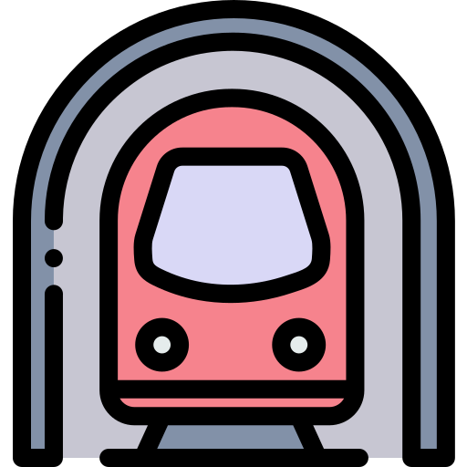
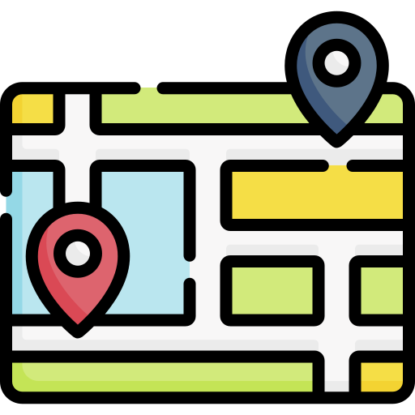

Fechas

Del 26 al 30 de octubre de 2025
Hotel

Allegro Barcelona
Web oficialComo ir del Aeropuerto al Hotel
En AeroBus

Aerobus hasta Plaza Catalunya, linea verde destino Trinitat Nova hasta Diagonal
En Tren

Tren de Rodalies R2 en la Terminal 2 hasta Passeig de Gracia, linea verde hasta Diagonal
En Metro
Linea L9 Sud hasta Zona Universitaria, linea verde hasta Diagonal
Donde comer

–Café de París (Cerca de la Av. Diagonal)
–Bar de tapas de mariscos La Peninsular en la Barceloneta
–Viana Restaurante - Cocina Fusion
–Monster Sushi
Itinerario día 1
- – LLegada al hotel y dejar el equipaje
- – Paseo de Gracia, casa Batllo, La Pedrera (Casa Milá), Casa Amatller
- – Sagrada Familia (ver desde afuera) (opcional)
- – Plaza de Catalunya (Primark, Corte Ingles, Decathlon)
- –Las Ramblas, Mercado de la Boquería
Itinerario día 2
- –Sagrada Familia Tickets Visita Guiada
- –Hospital de la Santa Creu i Sant Pau
- –Park Güell Entrada parque
- – Casa Vicens
- – Bar Bodega Quimet (Bar de tapas)
Itinerario día 3
- –Casa Batlló Tickets Sagrada Familia +Casa Batlló
- –Barrio Gótico
- – La Barceloneta